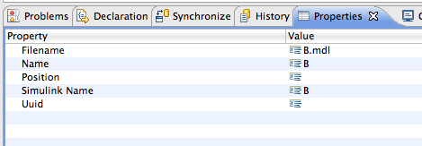

Converting from EAST-ADL to intermediate format .simulink
EAST-ADL models have two files: di2 and uml.
The di2 contains the graphical information, and is ignored in this process.
We use only the uml file.
Starting a transformation
Right-click on a UML file to get a context pop-up menu with the transformation option.
Checking for problems
The Error Log view contains some information on the status of the process.
See the results

The Eclipse workspace has to be refreshed before you can see the newly created file with the extension .simulink.
EMF reflective editor
The editor opens with a double-click on a file with the simulink extension.
The model can be modified within this editor.
Examining elements

The properties view shows more information on the individual items.